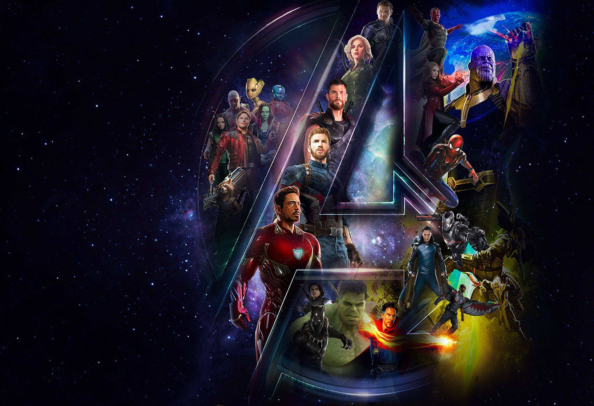

Movie Introduction
By the end of all
can you see it?
简 介
复仇者联盟3：无限战争
Avengers: Infinity War
导演：安东尼·罗素
演员：小罗伯特·唐尼 / 克里斯·海姆斯沃斯 / 克里斯·埃文斯 / 马克·鲁弗洛 / 乔什·布洛林
上映时间：2018-05-11(中国大陆) / 2018-04-23(加州首映) / 2018-04-27(美国)
评分：8.1 /10
片长：150 mins
剧 情
最先与灭霸军团遭遇的雷神索尔一行遭遇惨烈打击，洛基遇害，空间宝石落入灭霸之手。未几，灭霸的先锋部队杀至地球，一番缠斗后掳走奇异博士。为阻止时间宝石落入敌手，斯塔克和蜘蛛侠闯入了敌人的飞船。与此同时，拥有心灵宝石的幻视也遭到外星侵略者的袭击，为此美国队长、黑寡妇等人将其带到瓦坎达王国，向黑豹求助。幸免于难的索尔与星爵一行相逢，随后他们兵分两路。索尔与火箭、格鲁特踏上再铸雷神之锤的旅程，星爵则与卡魔拉等人试图阻止灭霸的恶行。而知晓灵魂宝石下落的卡魔拉，同样是其义父灭霸追踪的对象。攸关整个宇宙命运的史诗战役全面展开，超级英雄们为了平凡而自由的生命奋不顾身……
剧 照
影 评
在片尾自己消失之前，奇异博士对托尼说：There was no other way.
他做了什么？用时间宝石交换了托尼的性命。
在这部电影中，在他观看14000605种可能之前，他明确地对托尼和小蜘蛛说我会选择保护宝石，如果牺牲你们的性命也要这样做。这应该是一个伏笔——他做出了一个明显的改变。
显然，在他看到的唯一赢的一次里，他必须交出时间宝石。
逆转未来？蚁人出场

《复仇者4》的片场照里，托尼，美队和蚁人在一起。搜索Avengers 4 Captain America Ant Man会看到不少片场照。重点是美队穿着一代战服，班纳也在，这应该就是2012年的纽约之战。
虽然觉得“逆转未来”有点套路了，但根据这些图难免会有这样的猜测——蚁人显然本不该出现在2012年的战役中。
也许并不是只有蚁人才能“回去”，但选择他势必有其道理。黄蜂女也许也可以，总之，这应该涉及到技术本身——Pym Particals. 蚁人在第一部曾进入到微观世界，并且险些困在其中。毕竟蚁人电影里面的宏观物理规律都成谜，比如东西变大变小之后编剧说多重就多重。微观的话……就有更多可能了。
X战警里选择金刚狼来逆转未来，是因为只有他的身体能抵挡住时空的扭曲（是这么说的吗）。而选择蚁人可能是因为他见过原子长什么样？缩到多小才能逆转？或者说在量子世界跑一跑，就从2012年的出口回去，来个literally“以空间换时间”如何？
按理说蚁人是复仇者联盟成立的关键人物，但他直到《美队3》才跟大家见面。如果这么一逆转未来，蚁人真的成为复联成立初期的关键大人物了。
或许只凭借Pym博士的科技不足以时空旅行。不知道要做到这一点还需要哪个英雄来帮忙。
或者还是要依靠时间宝石？
那么也欢迎重回片场，Loki.
托尼，唯一方法的一部分？
总觉得蚁人目前在MCU的咖位显然还不足够撑起改变整条故事线的重任。联想到《复联2》托尼的梦境，以及他在MCU中的重要程度，奇异博士都用了时间宝石来换取他活下去，感觉他还是会是那个更重要的角色。
钢铁侠也在“2012”的片场。虽然什么确凿的证据，但个人感觉这个钢铁侠是2018年之后的托尼——也回到2012年去了。他可能要把重要的东西带回去。是个信息？还是他这几年的新技术，比如《美队3》中的B.R.A.F.（根据漫威百科，B.R.A.F.技术是对海马体的影响/记忆的修改）呢。
“脱掉这身战甲你还剩什么？”虽然这个问题在《钢铁侠3》里就已经给出足够的回答，但也许下一部会有更好的回答。另外在这一部里他奋不顾身对抗灭霸时，也已是“衣不蔽体”，这一段实在太令人动容。不管穿不穿战甲，他都是唯一的钢铁侠。
一个不太靠谱的脑洞：蚁人和铁人可能没去2012年，而是去了，谁的脑袋里？（真的是“脑洞”）
鹰眼又回来了
内战后的鹰眼按说已经退休，在漫威新出的漫画 Infinity War Preclude 里也是如此，专注于自己的家庭。蚁人也回家看小女儿了。
但在《复联3》中鹰眼的名字就被提到两次（美队和战争机器的对话，以及彩蛋中的局长也要找他）。鹰眼已经确定出现《复联4》（有片场照），或许他家人的蒸发会让他重新拿起武器。另外也有可能，即复联4里出场的鹰眼——就是2012年的鹰眼。又或许两者都有。

作为《复联2》看起来真正的男主，再让他carry全宇宙不太好了吧，个人估计主要是来耍耍帅的。
惊奇队长
作为彩蛋的主题，惊奇队长一定出现。MCU里她具体技能还不确定，总之编剧说你多强就多强吧。
宝石的集中是必需的？
这一段更多是我的脑洞。
奇异博士看到的那么多可能性里，一次也没有夺下来过手套吗？也许夺下来也没有用吧。
电影中托尼和幻视（思想中有一部分来自斯塔克）都动过破坏宝石的念头。
而灭霸想要6颗石头。他至少想要宝石免于破坏，意识宝石碎了都要强行恢复。
（博士甚至可以说是要灭霸去“救”这些宝石？）
可能，只有这样才能集齐宝石，从而做些什么？比如只有这样才能让灭霸采取打响指的方式（使得一半人还有复活的机会？）而不是用直接杀的方式。
或许宝石的集中也能为主角们所应用。
消失的人去了哪里？
应该是灵魂宝石。
（在这个空间里，建议Gamora对星爵先拳打脚踢一顿）
《银护2》中那个金色的神秘人叫做亚当，应该就是魔导士/亚当。漫画里的他是灵魂空间的重要角色。只是关于他的铺垫在MCU中出现的太少了，原本属于他的一些重要任务，或许要别人先承担一下。这个铺垫可能预示着银护3中亚当会亮相。


阿斯嘉德还活着一半人
电影中出现了这个表达。女武神确定会参演下一部。所以，阿斯嘉德是怎么只死了一半人的？女武神是啥时候走的？
总之
大概会是这样：奇异博士说这是唯一的方式，蚁人（可能还有托尼）带着重要任务回到2012，托尼会用知识回应灭霸说的“你被知识诅咒”，惊奇队长至关重要（可能是穿越过程中对于能量的操控）。
还是希望电影到时候给我们带来更多意想不到的惊喜吧。
想到什么再补充。
PS 魔法是可以进入微观世界的吗？在奇异博士单体电影里，古一第一次带他去了各种万千世界。我认为编剧也完全可以说YES.
PS2 小辣椒可能会在下一部中参与战斗（电视节目里表示曾经穿着“乒乓球”参与录制）。

PS3 霍华德鸭都已经出现在银护1彩蛋里来过一次了，真心希望他机甲大变身。
PS4 这个无限手套用一次就焦了，是不是好像七龙珠召集神龙一样，需要休息一阵子。
PS5 看着夕阳的时候真的不会觉得，只是用除以二这种二级运算，对以不同曲线增长的种群很不公平吗……
PS6 如果给关一帆一个机会，他也许会告诉灭霸，不要轻易改变宇宙总质量。“我从程心身上学到了很多。”
更新：灭霸对托尼说的“你不是唯一被知识诅咒的人”，我认为言下之意，应该是他自己也是一个被诅咒的人。他的屠杀行为的更深层原因应该会在下一部中揭示。第四部想必也不是“击败一个反派”这么简单。